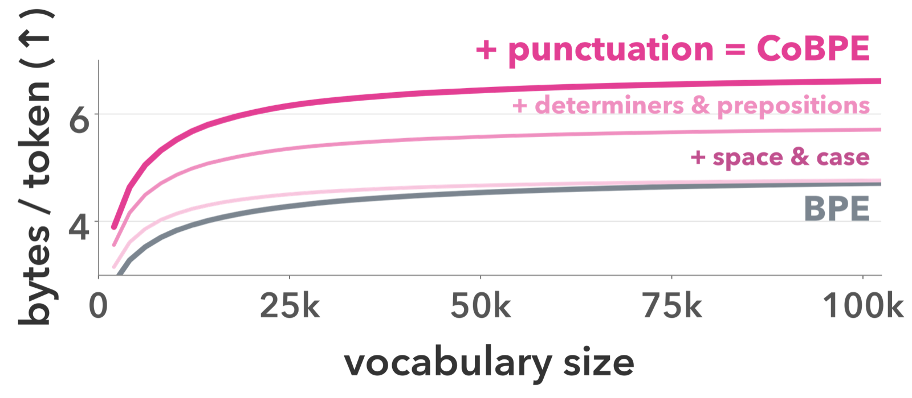

The Hebrew University of Jerusalem
COLM 2026Articles, prepositions & punctuation like the, on and , take up 30% of the tokens in English text.
In BPE, each one costs a full forward pass, the same as a content word.
29.8% of token positions on English web text (FineWeb) with GPT-4's tokenizer.
CoBPE attaches them to a base token as modifiers, encoded and predicted together in one step.
Compared to BPE, at matched training compute, CoBPE gives:
The same text in 30% fewer positions (SuperBPE: 15%), with nothing lost: the original text is reconstructed exactly.
30-task average for 780M and 1.3B models trained from scratch on English.
Fewer, slightly costlier steps: shorter sequences more than pay for the extra prediction head.
1 · The problem
A BPE tokenizer gives most English words a single token. But the small words between them get one too: _the costs the model exactly as much as _ground.
the, a, this
prepositions in, of, on
punctuation . , ( ) : "
English FineWeb documents tokenized with GPT-4's tokenizer (paper §2, Figure 2).
One existing fix is to let BPE merge across word boundaries, so a phrase becomes one token (SuperBPE; Boundless BPE). That does shorten sequences, but every phrase needs its own vocabulary entry, and nothing is shared between them:
Can we get shorter sequences without a separate entry for every phrase?
2 · The idea
CoBPE keeps the content word as a base token and attaches the markers around it as modifiers: determiner, preposition, punctuation before and after, plus capitalization and the leading space. Base and modifiers together form one compound token. Because modifiers are separate from the base, the same the is reused with every word.
| Text | BPE tokens | # | CoBPE compound token | # |
|---|---|---|---|---|
| ground | ground | 1 | ground | 1 |
| the ground | the_ground | 2 | grounddet: the | 1 |
| _The ground | _The_ground | 2 | ground_det: thecap: det | 1 |
| _The Ground | _The_Ground | 2 | ground_capdet: thecap: det | 1 |
| In the ground | In_the_ground | 3 | groundprep: incap: prepdet: the | 1 |
| in the ground, | in_the_ground, | 4 | groundprep: indet: thesuffix: , | 1 |
| (in the ground) | (in_the_ground) | 5 | groundprefix: (prep: indet: thesuffix: ) | 1 |
BPE needs 1–5 tokens and several different spellings of ground; CoBPE keeps one base and varies only its modifiers. _ marks a leading space. Paper Table 1.
“In a hole in the ground, there lived a hobbit. Not a dirty, wet hole, …”
Attachment is local, not syntactic: a multi-token word like hob|bit takes its leading markers on the first piece and its punctuation on the last. Paper Figure 1.
The vocabulary gets cleaner too. In a 32k BPE vocabulary, 27% of entries are capitalized or space-prefixed variants (table Table _table _Table), each with its own embedding. In CoBPE they are one base, table, and the freed slots go to new words.
3 · The model
Only the way tokens go in and out of the model changes. The transformer in between is standard.
On the table.
Ordinary BPE, then one left-to-right pass attaches each marker to its neighbor.
Base embedding plus one embedding per active modifier.
Unchanged backbone: one forward pass per compound token, and 30% fewer of them.
table)The base first; then, conditioned on it, one small softmax per modifier group.
About 100 modifiers in 8 groups cover English, and together they add under 0.1% to the model's parameters. Head equations and training objective: paper §3.3.
4 · Results
We pretrain 780M and 1.3B models from scratch on English (ClimbMix), holding the architecture, recipe, 32k vocabulary size and token budget fixed, and change only the tokenizer.
30% shorter sequences
Relative sequence length, 32k vocabulary
+1.2 points downstream
30-task average (SuperBPE's evaluation suite), matched training compute
Each model trains on 20 tokens per parameter (15.6B / 26B tokens), so compute is matched, but CoBPE covers about 1.4× more raw text in the same number of tokens. Full per-task results are in the paper (Table 2).
1.28× faster generation
Seconds to generate the same text (1.3B models, copying CNN/DailyMail passages)
1.23× faster training
Hours to GPT-2-level quality on the nanochat speedrun (8× L40S)
Each CoBPE step costs a little more (it also predicts modifiers), but 32.5% fewer steps more than make up for it. Speedrun times are comparable within our setup, not with the public H100 leaderboard.
5 · More in the paper

~1.4× more text per token
At every vocabulary size. Space and case modifiers help most at small vocabularies; determiners, prepositions and punctuation add large, steady gains on top. (Paper Figure 1.)
Spanish 31.8%, German 21.2%, Hindi 20.8%, Indonesian 18.0%, with modifier inventories extracted automatically from Universal Dependencies (compression only; no pretraining yet).
The ~100 English modifiers need about 0.5M parameters for embeddings and prediction.
Multi-word tokens could cover phrases that modifiers can't express. And what else could live inside a modifier: morphology, more languages?
6 · Use it
arXiv:2610.05597 · COLM 2026
Tokenizer (Rust runtime), model integration, and the scripts for every paper run.
Trained model weights will be released here.
Install and check the tokenizer runtime (CPU; use --extra gpu for CUDA):
git clone https://github.com/schwartz-lab-NLP/cobpe && cd cobpe
uv sync --locked --extra cpu
uv run --locked --extra cpu python -m cobpe check-installThe README covers training tokenizers, inspecting tokenizations, and reproducing the paper runs.
Language models process and generate text sequentially in token units, and the tokenizer determines how much text each inference step covers. Under standard tokenization, a short English phrase such as “On the table.” is usually produced as four separate predictions for the preposition (On), article (the), noun (table), and punctuation (.), where each consumes a sequence position and adds inference cost. We introduce CoBPE, a compositional tokenization approach that represents such phrases as a lexical base token (table) attached with a small set of reusable surface modifiers, composed in embedding space at input and predicted jointly at output. In controlled pretraining from scratch at 780M and 1.3B scales, CoBPE shortens sequences by 30% and improves average downstream performance by 1.2 points relative to standard BPE under matched training compute. Our results suggest that part of what is now expressed through token sequences can instead be modeled through structured representations, opening a broad design space for more token-efficient and capable language models.
@inproceedings{reif2026morethanwords,
title = {More Than Words: Compositional Tokenization for
Efficient Language Models},
author = {Reif, Yuval and Kaplan, Guy and Schwartz, Roy},
booktitle = {Conference on Language Modeling (COLM)},
year = {2026},
url = {https://arxiv.org/abs/2610.05597}
}